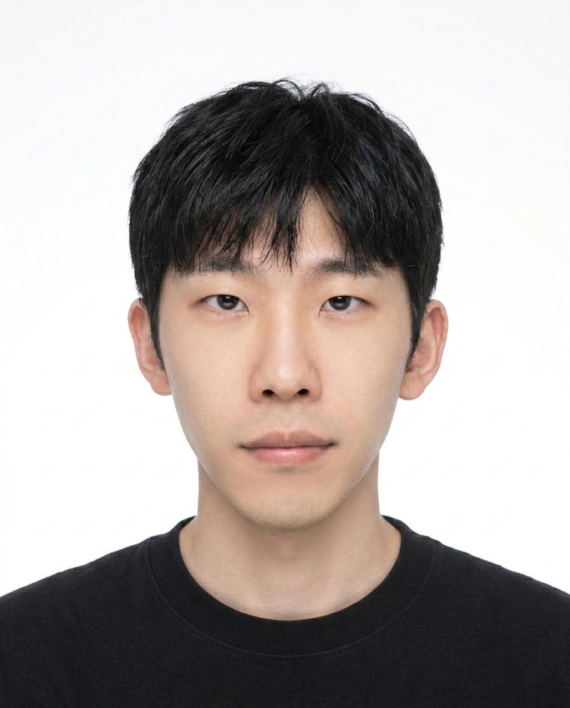

원유찬
새로운 기술을 실제 개발에 적용하며, 완성도 높은 시스템을 만드는 개발자로 성장하고 싶습니다.
1. 언리얼 엔진 활용
- Unreal Engine 기반 버추얼 프로덕션 환경 구성
- nDisplay를 활용한 LED Wall 출력 및 다중 디스플레이 렌더링 실습
- 카메라 트래킹 연동을 통한 실시간 가상 배경 구현
- 버추얼 스튜디오 촬영 워크플로우 및 ICVFX 구조 이해
2. AR 콘텐츠 제작
- Unreal Engine AR Geometry를 활용한 실제 공간 기반 AR 콘텐츠 제작
- 공간 인식 기능을 활용하여 AR 가상공간 내 캐릭터 배치 및 상호작용 구현
- 다마고치 콘셉트의 가상 캐릭터 콘텐츠 기획 및 프로토타입 제작
3. 네트워크 통신
- C++ WinSock 기반 TCP 소켓 통신을 활용한 서버-클라이언트 구조 구현
- FlatBuffers를 이용한 패킷 데이터 직렬화 및 역직렬화 처리
- 로컬 환경에서 다중 클라이언트 채팅 프로그램 제작 및 통신 테스트
- Unreal Engine 네트워크 Replication, RPC 개념 및 멀티플레이 구조 학습
어릴 때부터 저는 게임을 무척 좋아했습니다. 캐릭터를 성장시키고 새로운 장비를 얻거나 다양한 콘텐츠를 경험하는 과정 자체가 즐거웠습니다. 직접 판단하고 선택하고 조작하며 그 결과를 즉각적으로 경험할 수 있는 부분에서 다른 콘텐츠들보다 더 몰입감있는 경험을 할수 있다는 점에 매력을 크게 느꼈던 것 같습니다.
여러 게임을 플레이하며 다양한 시스템을 경험하는 과정에서, 어떤 시스템은 아쉽게 느껴지고 어떤 시스템은 몰입감을 높일 만큼 잘 설계되었다고 느낀 적이 많았습니다. 특히 좋은 아이디어를 가진 게임이라도 시스템의 완성도나 구현 방식에 따라 재미가 충분히 전달되지 못하는 경우를 보며, 게임의 재미는 아이디어만으로 완성되는 것이 아니라 기획된 시스템이 실제로 동작하고 플레이어에게 자연스럽게 전달되기 위해서는 이를 구현하는 프로그래밍 단계가 중요하다고 생각했습니다. 이 점이 게임 개발에 관심을 가지게 된 계기 였습니다.
목표를 비교적 늦게 찾은 만큼, 부족한 부분을 더 현실적으로 채워야 한다고 생각했습니다. 컴퓨터공학 전공자는 아니지만 게임 개발자가 되기 위해서는 단순히 엔진 사용법만 익히는 것보다 컴퓨터 구조, 자료구조, 알고리즘, 운영체제 등 기본적인 CS 지식이 필요하다고 느꼈습니다. 그래서 관련 개념을 개인적으로 공부하며 기초를 쌓았고, 작은 기능이라도 직접 구현해 보며 동작 원리를 이해하려고 노력했습니다.
게임을 좋아하는 마음에서 개발을 시작하게 되었지만, 공부를 이어가며 여러 시스템과 로직을 직접 설계하고 구현하는 개발 과정 자체에 더 큰 흥미를 가지게 되었습니다. 현재는 게임 개발 분야에 대한 관심을 바탕으로, 특정 분야에만 한정되지 않고 다양한 서비스와 환경에서 활용될 수 있는 개발 역량을 갖춘 개발자로 성장하고자 합니다.
저의 장점은 성실함과 책임감입니다. 평일에는 부트캠프에서 개발 역량을 키우고, 주말에는 아르바이트를 하며 학습과 일을 병행한 경험이 있습니다. 바쁜 일정 속에서도 계획적으로 시간을 관리하며 해야 할 일을 꾸준히 이어갔고, 부트캠프와 아르바이트 모두 단 한 번도 지각하지 않으며 맡은 일에 책임감 있게 임했습니다.
저의 또 다른 장점은 정확한 원인 분석을 바탕으로 한 문제 해결력입니다. 최근 언리얼 엔진에 MCP를 연동하는 과정에서 기능이 의도한 대로 동작하지 않는 이슈가 발생했습니다. 참고할 수 있는 자료가 많지 않은 상황이었지만, 로그를 단계별로 확인하며 문제가 발생한 지점과 원인을 파악했습니다. 이후 확인한 내용을 바탕으로 로직을 수정했고, 최종적으로 MCP 연동을 성공적으로 마무리할 수 있었습니다.
저의 단점은 완성도에 대한 욕심이 있어 세세한 부분에 신경을 많이 쓰는 점입니다. 개발을 할 때도 작은 부분을 더 깔끔하게 만들고 싶어 오래 고민하다 보니, 중요한 기능 구현이나 전체 일정에 부담이 생길 수 있다고 느꼈습니다. 이를 개선하기 위해 현재는 작업을 시작하기 전에 핵심 기능과 우선순위를 먼저 정하고, 반드시 필요한 부분을 먼저 완성한 뒤 세부적인 부분을 보완하는 방식으로 진행하려고 노력하고 있습니다.